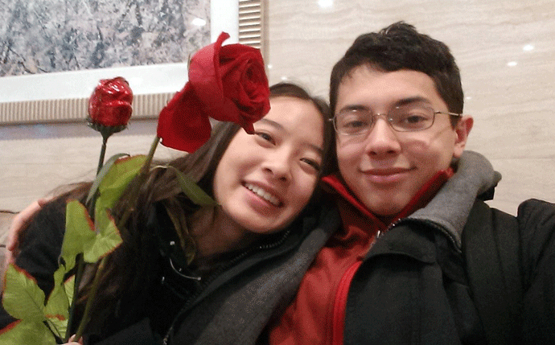

Do you ever think its strange that we are almost opposites,
yet we're strangly the same. How we can think so differently
and work so well together. Some people say that opposites
attract, but I don't think thats what makes us strong.

I think we complete each other.